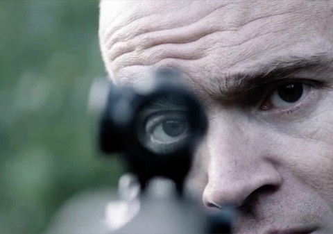
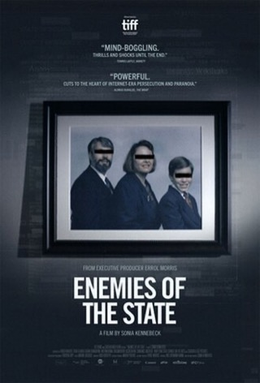
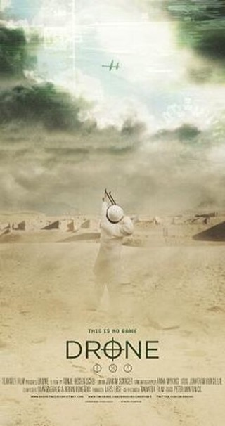

War, conflict & the military
Wars, soldiers, veterans and the people caught up in them.
46 films · 18 sessions · 145 people
Often together with: Middle East & South AsiaRussia & Eastern EuropeWhistleblowers & leaksDemocracy & electionsRace & civil rightsLegal & safety for reporters
Films
- An Unknown SubstanceSteven Leckart · Maia Wikler2026 · 39 min
 Killing AnnaSam Benstead2026 · 76 min
Killing AnnaSam Benstead2026 · 76 min Rehearsals for a RevolutionPegah Ahangarani2026 · 95 min
Rehearsals for a RevolutionPegah Ahangarani2026 · 95 min Rhapsody on the Outlaw OceanIan Urbina2026 · 61 min
Rhapsody on the Outlaw OceanIan Urbina2026 · 61 min- Short Strand: Against the GrainSteven Leckart · Maia Wikler2026
- Short Strand: Minneapolis: On the Record + A Special ScreeningLaura Poitras, Rachel Lauren Mueller · Anne Sundberg · Yoruba Richen, Christalyn Hampton2026
 The Oligarch and the Art DealerAndreas Dalsgaard2026 · 120 min
The Oligarch and the Art DealerAndreas Dalsgaard2026 · 120 min The Secret Reading Club of KabulShakiba Adil, Elina Hirvonen2026 · 95 min
The Secret Reading Club of KabulShakiba Adil, Elina Hirvonen2026 · 95 min The Sludge WarGalassia Grassetto2026 · 80 min
The Sludge WarGalassia Grassetto2026 · 80 min Cover-UpLaura Poitras, Mark Obenhaus2025 · 117 min
Cover-UpLaura Poitras, Mark Obenhaus2025 · 117 min KhartoumIbrahim Snoopy Ahmad, Timeea Mohamed Ahmed, Rawia Alhag2025 · 82 min
KhartoumIbrahim Snoopy Ahmad, Timeea Mohamed Ahmed, Rawia Alhag2025 · 82 min We Bloom in Spring2025 · 19 min
We Bloom in Spring2025 · 19 min HomegrownMichael Premo2024 · 109 min
HomegrownMichael Premo2024 · 109 min
Men of WarJen Gatien, Billy Corben2024 · 98 min Relentless MemoryPaula Rodriguez Sickert2024 · 93 min
Relentless MemoryPaula Rodriguez Sickert2024 · 93 min- 23Milan M.A. Gonzales2023 · 10 min
 One BulletCarol Dysinger2023 · 90 min
One BulletCarol Dysinger2023 · 90 min Suddenly TVRoopa Gogineni2023 · 19 min
Suddenly TVRoopa Gogineni2023 · 19 min The Lost Souls of SyriaStéphane Malterre2023 · 99 min
The Lost Souls of SyriaStéphane Malterre2023 · 99 min The Night DoctrineMauricio Rodriguez-Pons, Almudena Toral2023 · 16 min
The Night DoctrineMauricio Rodriguez-Pons, Almudena Toral2023 · 16 min The Price of Truth, Director’s CutPatrick Forbes2023 · 85 min
The Price of Truth, Director’s CutPatrick Forbes2023 · 85 min Mariupolis 2Mantas Kvedaravičius2022 · 112 min
Mariupolis 2Mantas Kvedaravičius2022 · 112 min Myanmar DiariesThe Myanmar Film Collective2022 · 70 min
Myanmar DiariesThe Myanmar Film Collective2022 · 70 min RetrogradeMatthew Heineman2022 · 95 min
RetrogradeMatthew Heineman2022 · 95 min Sealed in BloodSofian Khan2022 · 10 min
Sealed in BloodSofian Khan2022 · 10 min The GrabGabriela Cowperthwaite2022 · 104 min
The GrabGabriela Cowperthwaite2022 · 104 min 3212 Un-RedactedBrian Epstein, James Gordon Meek, Andrew Fredericks2021 · 100 min
3212 Un-RedactedBrian Epstein, James Gordon Meek, Andrew Fredericks2021 · 100 min ATTICAStanley Nelson, Traci A. Curry2021 · 111 min
ATTICAStanley Nelson, Traci A. Curry2021 · 111 min FleeSPOTLIGHT: Flee2021 · 90 min
FleeSPOTLIGHT: Flee2021 · 90 min The RescueCENTERPIECE: The Rescue2021 · 114 min
The RescueCENTERPIECE: The Rescue2021 · 114 min
Enemies of the StateSonia Kennebeck2020 · 104 min MayorDavid Osit2020 · 89 min
MayorDavid Osit2020 · 89 min The Art of Political MurderPaul Taylor2020 · 80 min
The Art of Political MurderPaul Taylor2020 · 80 min Welcome to Chechnya: Inside The Russian Republic’s Deadly War On GaysWelcome to Chechnya2020 · 107 min
Welcome to Chechnya: Inside The Russian Republic’s Deadly War On GaysWelcome to Chechnya2020 · 107 min Desert OneBarbara Kopple2019 · 108 min
Desert OneBarbara Kopple2019 · 108 min Lost and FoundOrlando von Einsiedel2019 · 22 min
Lost and FoundOrlando von Einsiedel2019 · 22 min The CaveFeras Fayyad2019 · 90 min
The CaveFeras Fayyad2019 · 90 min Angels Are Made of LightJames Longley2018 · 117 min
Angels Are Made of LightJames Longley2018 · 117 min- How We ChooseAlexandria Bombach2018 · 15 min
 Of Fathers and SonsTalal Derki2018 · 99 min
Of Fathers and SonsTalal Derki2018 · 99 min- We Became FragmentsLuisa Conlon, Hanna Lane Miller, Lacy Jane Roberts2018 · 14 min
 Devil's Freedom (La Libertad del Diablo)Everardo González2017 · 74 min
Devil's Freedom (La Libertad del Diablo)Everardo González2017 · 74 min End of TruthEric Matthies, Tricia Todd2017 · 58 min
End of TruthEric Matthies, Tricia Todd2017 · 58 min Cartel LandMatthew Heineman2015 · 100 min
Cartel LandMatthew Heineman2015 · 100 min Deep WebAlex Winter2015 · 86 min
Deep WebAlex Winter2015 · 86 min
DroneTonje Hessen Schei2015 · 80 min
Sessions
- 2024 · Sat Nov 9 · 10:00 AMWorkshopWorkshop: Backpack Journalism for FilmmakersBill Gentile
- 2023Screening eventFilm Screening: Short Cuts Program 2
- 2023 · Fri Nov 3 · 1:00 PMPanel · DX²Out of Sight/Top of Mind: Covering War’s Forgotten CasualtiesPaco De Onís, Carol Dysinger, Roopa Gogineni, Elahe Izadi
- 2023 · Fri Nov 3 · 12:00 PMScreening eventShortcuts Program 1
- 2022 · Sat Oct 15 · 10:00 AMWorkshop · DX²Obtaining Audio & Visual Materials Through Public Records RequestsGunita Singh, Ken Klippenstein, Lauren Feeney
- 2022 · Thu Oct 13 · 10:00 AMConversation · DX²Opening Conversation: The Making of NavalnyDaniel Roher, David Filipov, Maria Pevchikh
- 2022 · Fri Oct 14 · 2:00 PMPanel · DX²Vanishing Act: Capturing the Death of DemocracyVasily Polonsky, Ricardo Sandoval-Palos, Corinne van Egeraat, Drew Sullivan
- 2021 · Thu Oct 14 · 4:00pmPanelAfghanistan in CrisisCharles M. Sennott, David Cowan, Shoaib Fakhruddin, Kirshma Sharifi, Beth Murphy, Victoria Baranetsky
- 2021 · Fri Oct 15 · 11:30amPanel · DX²Staying Safe: Identifying, Understanding, and Preparing for RisksCaitlan Coleman, Margaux Ewen, Thomas Durkin
- 2020 · Wed Oct 14 · 12:30pmPanel · DX²Building a Culture of Safety for the Next Generation of Filmmakers and JournalistsThomas Durkin, Diane Foley
- 2019 · Fri Oct 11 · 9:45 AMPitchDocs in Progress PitchSara Barger, Amy Marquis, Jennifer Huang, Rodrigo Dorfman, Peter Eversoll, cai thomas, Serena Ajbani, Andrea Raby
- 2018 · Fri Oct 12 · 4:15 PMConversationClosing Conversation: Journeys Across the Abyss in Print and ScreenJames Longley, Shannon Service, Janet Reitman
- 2018 · Fri Oct 12 · 4:15pmPanel · DX²Journeys Across the AbyssShannon Service, Janet Reitman, James Longley
- 2018 · Thu Oct 11 · 11:00 AMPanelPivot: The Unexpected MomentMarcia Davis, Paco De Onís, Bridget Hunnicutt, Patrick Radden Keefe, Gordon Witkin, Pamela Yates
- 2017 · Thu Oct 19 · 10:30 AMPanelProtecting Sources & Subjects in a (Newly) Hostile EnvironmentLyric Cabral, Laura Handman, Sonia Kennebeck, Brian Knappenberger, Mike Thomson
- 2017 · Sat Oct 21 · 9:30 AMWorkshopSafe+Secure Filmmaker Workshop, in Association with Doc SocietyJudith Matloff, Jess Search
- 2017 · Sat Oct 21 · 1:30 PMWorkshopSafeguarding Sources: A Practical Guide for Investigative FilmmakersInes Hofmann Kanna, Sonia Kennebeck
- 2016 · Fri Oct 7 · 1:45 PMPanelSpilling the Secrets of Secrecy JurisdictionsElisabeth Bumiller, Jake Bernstein, Catherine Dunn, Marina Walker Guevara, David LeLoup
People most involved
- James LongleyPanelist, filmmaker · 2018
 Michael PremoFilmmaker, panelist · 2024
Michael PremoFilmmaker, panelist · 2024 Laura PoitrasFilmmaker, panelist · 2 editions, 2025–2026
Laura PoitrasFilmmaker, panelist · 2 editions, 2025–2026 Sonia KennebeckPanelist, filmmaker, workshop leader · 3 editions, 2017–2021
Sonia KennebeckPanelist, filmmaker, workshop leader · 3 editions, 2017–2021 Matthew HeinemanFilmmaker, panelist · 3 editions, 2015–2022
Matthew HeinemanFilmmaker, panelist · 3 editions, 2015–2022
 Carol DysingerFilmmaker, panelist · 2023
Carol DysingerFilmmaker, panelist · 2023 Roopa GogineniFilmmaker, panelist · 2023
Roopa GogineniFilmmaker, panelist · 2023 Jen GatienFilmmaker, panelist · 2024
Jen GatienFilmmaker, panelist · 2024- Paula Rodriguez SickertFilmmaker, panelist · 2024
 Rachel FalconeFilmmaker, panelist · 2024
Rachel FalconeFilmmaker, panelist · 2024 Mark ObenhausFilmmaker, panelist · 2025
Mark ObenhausFilmmaker, panelist · 2025 Seymour HershFilm subject, panelist · 2025
Seymour HershFilm subject, panelist · 2025 Steven Leckart · Maia WiklerFilmmaker · 2026
Steven Leckart · Maia WiklerFilmmaker · 2026- Shannon ServicePanelist, filmmaker · 2018
- Thomas DurkinPanelist · 2 editions, 2020–2021
- Kathryn BigelowFilmmaker · 2015
- Alex WinterFilmmaker, panelist · 2 editions, 2015–2018
- Joshua DratelPanelist · 2015
- Tonje Hessen ScheiFilmmaker · 2015
- Tom BlantonPanelist · 2015
- Sabrina BuchwalterPanelist · 2015

- Scott ShanePanelist · 2015
- Everardo GonzálezFilmmaker, panelist · 2017
 Eric MatthiesFilmmaker, moderator, panelist · 3 editions, 2017–2021
Eric MatthiesFilmmaker, moderator, panelist · 3 editions, 2017–2021- Tricia ToddFilmmaker · 2017
- Alexandria BombachFilmmaker · 2018
- Luisa ConlonFilmmaker · 2018
 Hanna Lane MillerPanelist, filmmaker · 2 editions, 2018–2025
Hanna Lane MillerPanelist, filmmaker · 2 editions, 2018–2025- Lacy Jane RobertsFilmmaker · 2018
- Talal DerkiFilmmaker · 2018